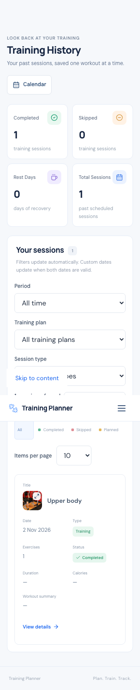
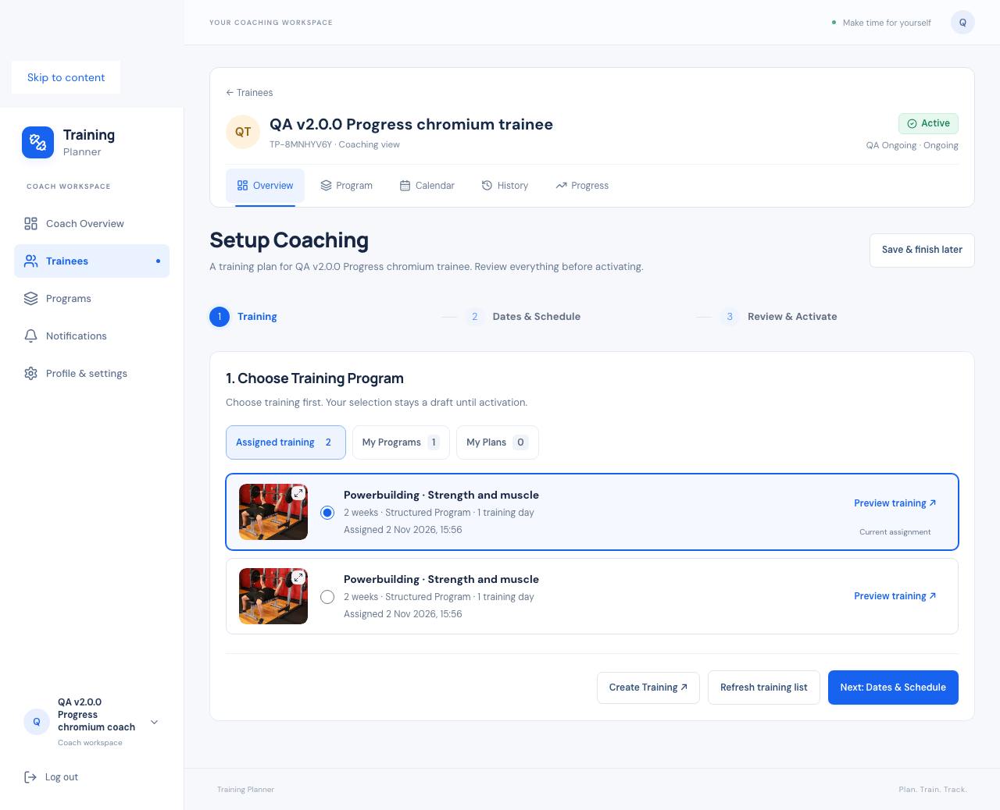

Training Planner · 2 November 2026
v2.3.8 — Thumbnails across workspaces
READY — DEPLOYED AND VERIFIED
Consistent expandable photos throughout Personal and Coach
training screens.
Coverage
Thumbnails now identify dashboard next/recent/today/upcoming
workouts, Coach upcoming/recent sessions and trainee current
training, setup choices, selected assignments and scheduling
forms, plan training-day lists and headers, structured program
details and runs, Calendar date session lists, History rows and
details, recent Progress workouts, and recommendation details.
The shared exercise viewer covers the library, builder/editor,
workout lists, active workouts, completed structured workouts,
actual-weight forms, and exercise Progress/PR screens. Existing
recommended/catalog/plan/program covers keep the same full-image
viewer. Rest days retain recovery icons. Compact month cells and
non-training statistics remain uncluttered.
Image buttons are separate from navigation and selection. Photos
expand without changing the draft or navigating. Preview uses
the complete stored image, supports Open original image, closes
with Escape, backdrop or close button, and restores focus.
Nested preview Escape closes only the photo, preserving the
exercise editor or Calendar dialog.
Data, performance and architecture
No migration, new media uploads or new dependencies. Existing
authorized queries supply covers with a correlated first-image
projection; no per-plan/day queries. Dedicated checks prove 12
plan covers in one query, 24 day covers in one query, and no
implicit queries in session image access.
Saved workout snapshots take precedence over program
prescriptions and live training-day photos. Empty saved
snapshots and legacy completions never borrow a changed template
image. Frozen run definitions supply run covers. Missing
exercise photos retain their chosen icon; missing plan/workout
photos use the established gym fallback.
Shared PlanThumbnail handles the viewer, ExerciseThumbnail
handles local upload previews and icon fallback, and
TrainingThumbnail handles day/workout presentation. Existing
authorization, subscriptions, program lifecycle, schedule
controls and PWA behavior are preserved.
Changed source files.
Verification
Full SQLite and isolated MySQL suites each passed 616 tests /
12,123 assertions. All 38 JavaScript tests passed. Chromium and
WebKit passed 392 checks across thumbnail coverage, image
previews, program layout and complete personal/Coach workout
lifecycle. Widths include 320, 360, 375, 390, 430, 768 and 1280,
including 320 × 480. No physical phone was used.
Twelve HTTP fixture checks passed. Build, Pint, Prettier,
Composer validation/audit and git diff checks passed. A local
registration rate limit during repeated browser logins was
allowed to expire; the lifecycle rerun passed. An early parse
typo was corrected before both full backend suites passed.
Local cleanup removed 12 disposable accounts and 280 generated
images. All 22 original tables and 44 original media hashes
match the baseline.
Verification evidence.
Desktop setup
Mobile History

Release and deployment
READY — DEPLOYED AND VERIFIED. Production moved from verified
v2.3.7 to immutable v2.3.8 commit
330cd754111da8cd952505e8f7892b799dc0c308. The
source and annotated tag were pushed without changing earlier
tags. This evidence is recorded in a documentation-only
follow-up commit.
Fresh database, runtime, uploads and environment backups were
verified before replacement. The immutable tag was exported and
rebuilt in a separate release directory. 115 patch files were
deployed; all 7,663 origin file hashes verified. All 609 public
assets verified: 605 exact HTTP hashes and 4 CDN-reencoded PNGs
with identical decoded pixels.
Live Chromium and WebKit passed 377 checks across
workout/history/setup/library/Calendar thumbnail coverage,
nested image previews, original-image tabs, program navigation,
responsive layouts, failed-image fallback and PWA behavior.
Twelve HTTP checks verified Personal and assignment-scoped Coach
card data. No migration ran. Push remains disabled; cron and
environment settings are unchanged.
All 4 disposable live accounts and generated media were removed.
All 650 original rows across 22 tables and 490 original media
files match the fresh backup. Environment bytes match exactly.
Temporary deployment endpoints, archives and credential ledgers
were removed. No known BLOCKER or HIGH issue remains in the
tested scope.
Deployment evidence ·
Open live Progress
Live desktop setup thumbnails

Live mobile History thumbnails